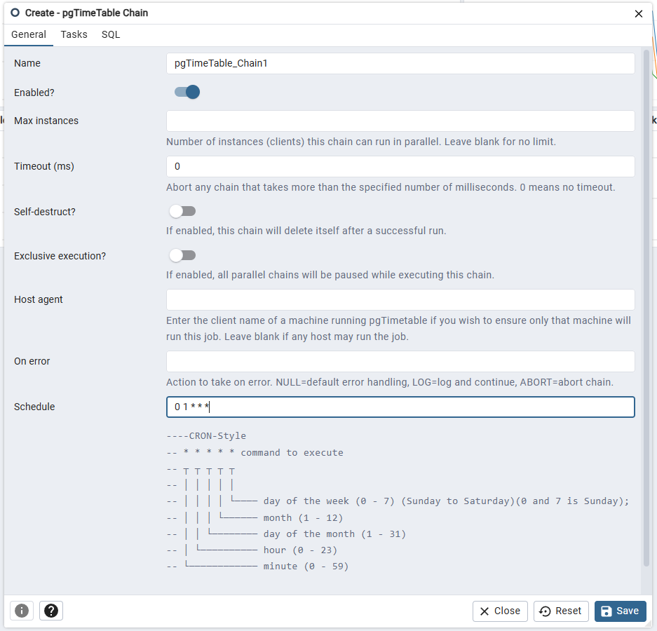
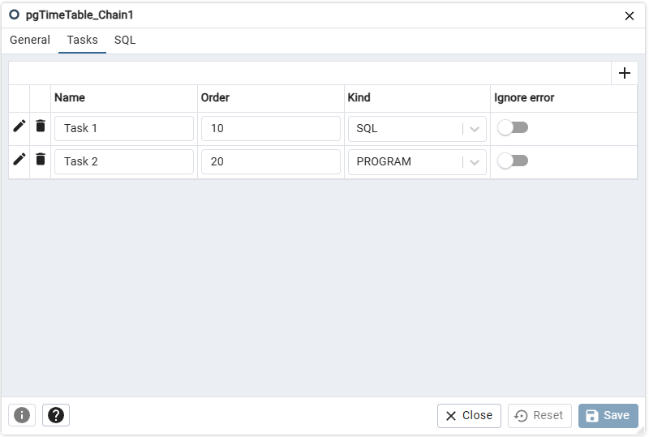
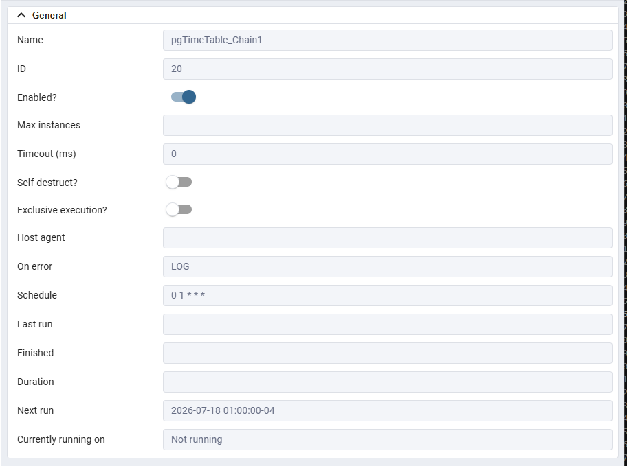
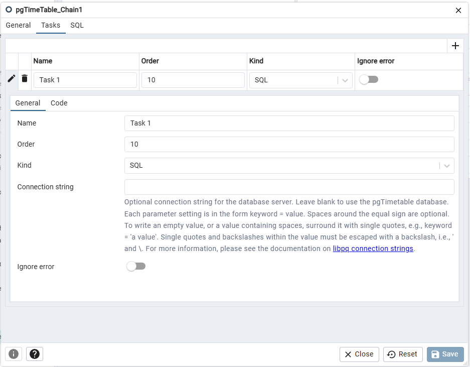
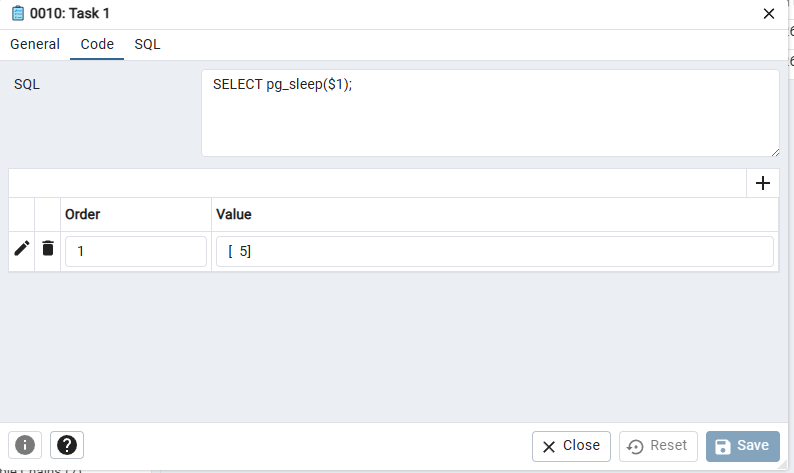
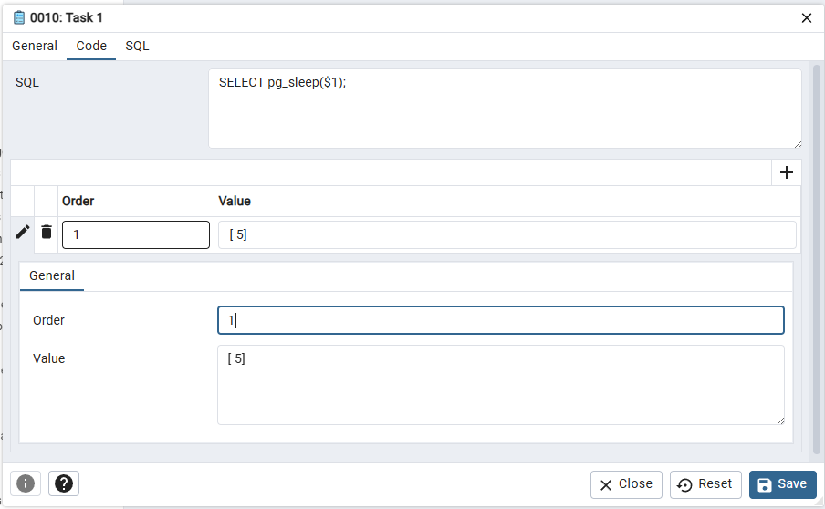
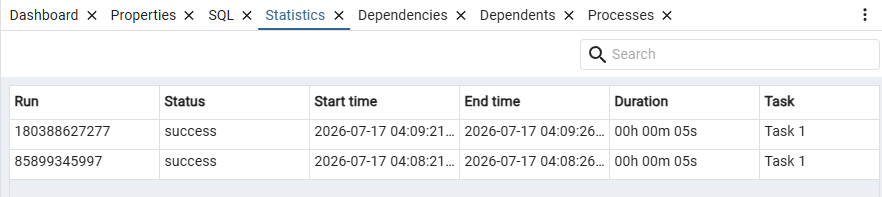

pgTimeTable Chains¶
pg_timetable is a PostgreSQL-based scheduling agent that runs and manages what are called Chains. Each chain is composed of a set of Tasks to be executed in the order they should run. A chain is assigned a single schedule using an extended cron-style format. This UI has been tested with pg_timetable 6.3.0 and above.
A task may be a series of SQL statements, a BUILTIN pg_timetable command (such as sending email) or an operating system PROGRAM program/batch/shell script.
Switches on the pgTimeTable Chain dialog (accessed through the Properties context menu) allow you to modify a chain or disable the whole chain, as well as modify tasks within the chain.
When you highlight the name of a defined chain in the pgAdmin tree control, the Properties tab of the main pgAdmin window will display details about the chain, and the Statistics tab will display details about the chain’s execution. There are also statistics about each task.
pg_timetable supports the ability to have more than one job agent running at a time. Job agents can be deployed on various platforms and binaries are readily available to deploy on Linux, Windows, and Mac.
For complete installation instructions, configuration options, and command-line usage, please refer to the pg_timetable documentation.
If you are migrating from pgAgent or another PostgreSQL based scheduler, pg_timetable provides migration SQL queries to help in that migration. See the migration tools on GitHub for details.
Viewing pgTimeTable¶
To enable viewing of the pgTimeTable Chains node, enable it on the File -> Preferences -> Nodes. It will only show if the schema timetable and associated tables exist in your maintenance database.
Creating a Chain¶
Note that pg_timetable is not installed via CREATE EXTENSION. Instead you use a pgTimeTable agent to install the necessary tables. To create or manage a chain, use the pgAdmin tree control to browse to the server on which the timetable schema exists. The tree control will display a pgTimeTable Chains node, under which currently defined chains are displayed.
To add a new chain, right click on the pgTimeTable Chains node, and select Create pgTimeTable Chain… from the context menu.
When the chain dialog opens, use the tabs on the dialog to define the chain and its tasks.

Use the fields on the General tab to provide general information about the chain:
Provide a name for the chain in the Name field.
Move the Enabled switch to the Yes position to enable the chain, or No to disable it.
Use the Max instances field to specify the number of parallel instances (clients) that may execute this chain simultaneously. Leave the field blank to allow unlimited parallel execution.
Use the Timeout (ms) field to specify the maximum number of milliseconds the chain may run before it is aborted. A value of 0 means no timeout.
Move the Self-destruct switch to Yes to have the chain delete itself after a successful run.
Move the Exclusive execution switch to Yes to pause all other parallel chains while this chain is executing.
Use the Host agent field to specify the client name of the agent running pgTimeTable that should execute this chain. Leave the field blank to allow any available host to run the chain.
Note
You can query the
timetable.active_sessionview to see the client names reported by running pgTimeTable agents:SELECT DISTINCT client_name FROM timetable.active_session
Use the client name exactly as reported by the query in the Host agent field.
Use the On error field to specify the behavior when an error occurs. Accepted values are:
NULL - Use the default error handling.
LOG - Log the error and continue execution.
ABORT - Abort the chain on error.
Use the Schedule field to specify a cron-style schedule for the chain. The format consists of a single field with 5 slots. As with regular cron, you can use a comma (,) for multiple values and an asterisk (*) as a wildcard for all. E.g. 20 1,5 * * * would run at 1:20 and 5:20 AM. The timezone is always the timezone of the server the pgTimeTable database resides on.
* * * * * | | | | | | | | | +---- day of the week (0 - 7) (0 and 7 = Sunday) | | | +------ month (1 - 12) | | +-------- day of the month (1 - 31) | +---------- hour (0 - 23) +------------ minute (0 - 59)
If you leave the field blank it runs every minute (the effective schedule is * * * * *).
In addition to cron syntax, pgTimeTable supports additional special case formats. Namely @after, @every, @reboot.
The @every and @after should be followed with additional arguments. For example @every 2 hours.

Use the Tasks tab to define and manage the tasks that the chain will execute. Click the Add icon (+) to add a new task. Tasks are executed in order of their Order value.
Click the compose icon (located at the left side of the header) to open the task definition dialog. See Chain Task Dialog below for details on defining a task.
When you have finished defining the chain, you can use the SQL tab to review the SQL that will create or modify your chain.
Click the Save button to save the chain, or Close to exit without saving. Use the Reset button to remove your unsaved entries from the dialog.
After saving a chain, the chain will be listed under the pgTimeTable Chains node of the pgAdmin tree control. The Properties tab in the main pgAdmin window will display a high-level overview of the selected chain, and the Statistics tab will show the details of each execution run.

To modify an existing chain or to review detailed information about a chain, right-click on a chain name, and select Properties from the context menu.
Chain Task Dialog¶
A chain task defines a single unit of work to be performed as part of a chain. Each chain can contain one or more tasks, which are executed sequentially in order.

Use the fields on the General tab to define the task:
Provide a name for the task in the Name field.
Use the Order field to specify the execution order of the task within the chain. Tasks are executed in ascending order by this value.
Use the Kind drop-down to select the type of task:
SQL - The task executes SQL statements.
PROGRAM - The task executes an operating system command.
BUILTIN - The task executes one of the built-in pgTimeTable commands.
When Kind is set to SQL, use the Connection string field to optionally specify a libpq-style connection string for a remote database. Leave the field blank to execute against the pgTimeTable database.
Note
The Connection string field is only available when the pgTimeTable extension version supports it (version 5.x or later). It is ignored for PROGRAM and BUILTIN task kinds.
Move the Ignore error switch to Yes to continue chain execution even if this task fails. Set to No to stop the chain when an error occurs.

Use the Code tab to provide the code or command for the task. The content of the Code tab depends on the selected Kind:
If Kind is SQL, provide one or more SQL statements in the SQL field. Use
$1,$2, etc. as parameter placeholders that will be substituted from the Parameters collection.If Kind is PROGRAM, provide the full path and arguments of the program to execute in the Program field.
If Kind is BUILTIN, select one of the following internal commands from the Internal Command drop-down:
NoOp - No operation; the task completes immediately.
Sleep - Pause execution for a duration specified by a parameter.
Log - Write a message to the pgTimeTable log.
SendMail - Send an email (requires parameters for recipient, subject, and body).
Download - Download a file from a URL.
CopyFromFile - Copy data from a file into a database table.
CopyToFile - Copy data from a database table to a file.
Shutdown - Shut down the pgTimeTable service.

Use the Parameters sub-collection to define parameter values that will be substituted into the task command. Click the Add icon (+) to add a new parameter row:
Use the Order column to specify the parameter position (
$1,$2, etc.).Use the Value column to provide the parameter value. The value may be a plain string or a JSON value.
Click the compose icon to close the task definition dialog, then click Save on the chain dialog to save all changes.
Refer to pg_timetable samples for the kind of parameters expected for each type.
Both the Chain and Tasks have a statistics tab, which show the results of past runs of tasks.
